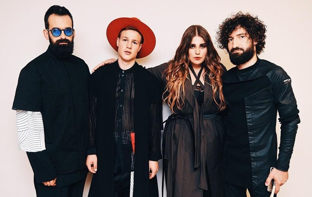

ВСЕ ОК - БУДЬ СПОК!
ЖИТТЯ- НЕ ТІЛЬКИ УРОКИ…Є ЩЕ СТІЛЬКИ БАГАТО ЦІКАВОГО!
Цікаві відомості про українських зірок
NK (Настя Каменських)
Музика завжди була присутня в житті співачки: мама була для неї і прикладом для наслідування, і найсуворішим учителем. У 6 років батьки віддали майбутню зірку до музичної школи за класом фортепіано. Крім того, Настя Каменських займалася ще і вокалом. Дівчинці не завжди хотілося ходити на заняття, але мама-співачка не давала майбутній зірці прогулювати.
Вона стартувала тріумфально – в 2004 році вона виграла гран-прі всеукраїнського благодійного дитячого фестивалю «Чорноморські ігри», а в 2005 – номінацію «Відкриття року» UBN Awards (Лондон). Настя Каменських стала популярною завдяки участі в дуеті «Потап і Настя». Олексій Потапенко шукав вокалістку для свого нового проекту. Його друг тоді був продюсером Насті, так що він запропонував співакові поглянути на талановиту дівчину. Потапу Настя відразу ж не сподобалася. Іронічно: тоді він не знав, що зустрів свою майбутню дружину. Потім Потап все-таки передумав і запропонував Насті співпрацю. Так і народився дует «Потап і Настя».
Настя Каменських і Потап швидко злетіли на вершину. Їх треки «Не пара», «Чумачечая весна», «Не люби мне мозги» та інші крутилися по всіх радіостанціях. За час свого існування дует «Потап і Настя» отримав безліч нагород і премій, серед них – «M1 Music Awards 3 Elements» за великий внесок в український шоу-бізнес.
У 2017 році Потап і Настя оголосили, що припиняють спільні виступи. Обидва виконавці зосередилися на сольній кар'єрі. Настя взяла лаконічний псевдонім NK. Вона стала популярною співачкою не тільки в Україні, а й за кордоном. Пісні Насті можна почути і в Італії, і в Латинській Америці. У 2018 році NK отримала нагороду «M1 Music Awards» в номінаціях «Співачка року» та «Кліп року». NK – не тільки популярна співачка. Вона займається благодійністю, веде відеоблог, бере участь у телепроектах і як учасниця, і як ведуча. У 2017 році вона запустила власну лінію спортивного одягу.
Антитіла
Антитіла — один із найвідоміших українських поп-рок-гуртів, який за десять років свого існування випустив шість студійних альбомів та подолав шлях від невеликих концертних залів до багатотисячних стадіонів. Своєю назвою Антитіла зобов'язані однойменній пісні, яку фронтмен Тарас Тополя виконав в одному з київських клубів у 2004 році. Композиція розповідає про протилежності, які сильно відрізняються, але не можуть один без одного. Філософський підтекст пісні став визначальним для колективу і міцно закріпився у назві гурту.
У 2007 році Антитіла взяли участь у популярному телевізійному проекті «Шанс». На відміну від інших учасників, музиканти виконали власну композицію «Я не забуду першу ніч», яка буквально підірвала ефір. Колектив залишився без перемоги в шоу, але отримав набагато більше — любов фанатів та можливість підкорити велику сцену. Того ж року хлопці вирушили у дебютний open-air тур містами України та дебютували з концертами в Києві, Чернігові, Умані, Сумах та Черкасах.
Офіційною датою заснування гурту вважається 2008 рік. Саме тоді Антитіла пережили перезавантаження та почали свою активну музичну діяльність. Влітку колектив підписав перший продюсерський контракт із «Catapult Music», а восени випустив дебютну платівку «БудуВуду», що складається з 16 пісень. Кліп на однойменну композицію за два тижні підкорив вершину хіт-параду на каналі М1 та приніс музикантам всеукраїнську популярність. За час свого існування склад гурту Антитіла змінювався кілька разів. Незмінним лідером бенду залишається Тарас Тополя, який є автором більшості текстів.
До нинішнього складу входять п'ять музикантів:
Тарас Тополя — вокал, тексти;
Сергій Вусик — клавішні, аранжування;
Дмитро Водовозов — ударні;
Дмитро Жолудь — гітара;
Михайло Чирко — бас.
За десять років музичної діяльності Антитіла випустили шість студійних альбомів:
«БудуВуду» (2008);
«Вибирай» (2011);
«Над полюсами» (2013);
«Все красиво» (2015);
«Сонце» (2016);
«Hello» (2019).
За плечима у бенду три десятки відеокліпів, кілька саундтреків до відомих фільмів та серіалів («Одинак», «Школа», «Я, ти, він, вона»), вісім гастрольних турів та національний рекорд України. Щорічно артисти номінуються у різних вітчизняних преміях і завойовують престижні музичні нагороди. Серед них перемога на всеукраїнському фестивалі молодих виконавців «Перлини сезону» (2008); номінації в категорії «Краща рок-група» та «Кращий альбом» (2018) премії YUNA; номінація в категорії «Хіт року» (2018) премії M1 Music Awards. У 2019 стартував наймасштабніший гастрольний тур гурту на підтримку студійного альбому «Hello». Артисти зібрали чотири стадіони у Львові, Харкові, Полтаві та Одесі, а також два аншлаги в столичному Палаці спорту.
Пісні гурту Антитіла займають перші рядки в хіт-парадах на радіо та музичних телеканалах. «ТDME», «Вірила», «Лови момент», «Все красиво», «БудуВуду» — тексти цих хітів знають та підспівують десятки тисяч меломанів.
Go_A

Гурт "Go-A" - київський квартет, що виконує пісні у створеному власноруч музичному стилі "укр-транс". Особливостями музики Go-A є сучасні електронні танцювальні біти, драйв рок-гітари, українські народні мотиви та мотиви народів світу, що виконуються на багатьох музичних інструментах - сопілці, бандурі, окаріні, діджеріду, джембе та інших - та яскравий і неперевершений український спів.
Гурт виник 20 грудня 2012 року. Відлік почався з викладення в мережу пісні "Коляда їде". На протязі 2013, Go-A встигли виступити на українських фестивалях включаючи фестиваль "Трипільське Коло", та дати декілька сольних концертів, відіграти на Євромайдані у Львові та Києві у листопаді, записати декілька студійних пісень та відзняти дебютний відеокліп на пісню "Танула".
Go-A також співпрацюють з музикантами з інших гуртів. Зокрема, було записано декілька пісень за участю сопілкаря-мультиінструменталіста Володимира Шолохова, відомого своєю співпрацею з гуртами Kozak System, та Телері. Також, разом із відомим бандуристом Ярославом Джусем, було записано музично-медитативний твір "Пробудження", до якого увійшли цитати Далай-Лами XVII. Музиканти Go-A також беруть участь у інших проектах та гуртах. У 2013 році вони зпівпрацювали з гуртами Кам'яний гість, Шпилясті Кобзарі та Morphine Suffering; було зроблено ремікс на пісню "Ой щож то мамо за дерево" гурту Postsense. На даний момент, гурт готується до випуску інтернет-EP.
Учасники гурту:
Тарас Шевченко - електроніка, клавішні, гітара, вокал
Катерина Павленко - український автентичний вокал, добірка української автентики, перкусія
Микита Єфанов - джембе, дарбука, діджеріду, варган
Вікторія Шарафутдинова - вокал, сопілка
KAZKA
KAZKA - український музичний гурт, який виконує поп-музику з елементами електро-фолку. З моменту створення у 2017 році вокалістка Олександра Заріцька, сопілкар Дмитро Мазуряк та мультиінструменталіст Микита Будаш вже встигли стати «Проривом року» за версією музичної премії M1 Music Awards, першим українськомовним гуртом, що потрапив до всесвітньовідомого чарту SHAZAM та рекордсменом серед українських артистів в YouTube. «Плакала»(сингл з дебютного альбому «KARMA») очолив музичні рейтинги в десятці країн, серед яких Україна, Латвія, Болгарія та інші.
Вперше гурт «KAZKA» заявив про себе 1 березня 2017 року дебютним релізом пісні «Свята», який одразу став хітом і підкорив радіостанції України. Саме на цю пісню у вересні вийшло дебютне музичне відео гурту, режисером якого став Сергій Ткаченко. Кліп «Свята» — це мінімалістична робота в червоних відтінках. Лише учасники гурту такі як вони є. 16 січня 2018 року стало відомо, що гурт візьме участь у національному відборі на 63-ій пісенний конкурс «Євробачення». За результатами жеребкування, 10 лютого гурт виступив у першому півфіналі з піснею «Дива», де вони посіли шосте місце.
27 квітня 2018 року на цифрових майданчиках, відбувся реліз дебютного альбому гурту під назвою «KARMA». Наживо гурт презентував альбом 1 червня на першому сольному концерті у київському клубі Atlas. Сингл «Свята» був визнаний «найкращою піснею поп-гурту», а сам гурт — «кращим дебютом» за версією радіостанції Країна ФМ.
Вперше україномовний гурт потрапив в один з найпрестижніших світових чартів ТОП 10 Global Shazam. «KAZKA» стала абсолютним рекордсменом серед вітчизняних артистів за кількістю переглядів і потрапила в ТОП 100 кращих кліпів на YouTube. Музикантам кілька разів присуджувалося звання «Прорив року», а з піснею «Плакала» вони отримали статуетку за «Хіт Року» і відзначилися в рейтингу найпопулярніших треків України за версією Apple Music. Гурт очолив музичні рейтинги в десятці країн.
Monatik

MONATIK – український співак, танцюрист, саундпродюсер, учасник талант-шоу «X-Фактор» та «Танцюють всі!». Відомий як учасник різноманітних творчих проектів та суддя шоу «Танці з зірками». «MONATIK» - творчий псевдонім Дмитра Сергійовича Монатика.
Народився музикант в Луцьку 1 квітня 1986 року. Початком творчої кар’єри артиста можна вважати день, коли він побачив виступ фанатів брейк-дансу у центрі Луцька, а вже через деякий час він став найкращим танцюристом брейк-дансу в цілому регіоні, а його команда «DBS Crew» почала гастролювати українськими містами та отримала статус кращої «b-boy» команди Західної України. Через деякий час «MONATIK» переїхав до Києва, щоб здобувати освіту юриста, проте навчання проходило як «каторга», а улюбленим заняттям хлопця були танці у вечірній час.
У 2008 році «MONATIK» вирішив спробувати свої сили у «Фабриці зірок-2», але до проекту не потрапив. Проте, того ж року на молодого танцюриста звернула увагу Наталія Могилевська та запросила його у свій балет, який виступав під час її концертної програми «Real O». Ця подія і стала переломним моментом для Дмитра. Хлопець зібрав свій перший музичний колектив «Monatique», у складі якого пройшли два концерти у Луцьку.
У наступному, 2009 році артист пройшов кастинг у балет «D'arts», і протягом 2-х років у його житті відбулось багато творчих подій, зокрема: вистава «Дівчинка з сірниками», та участь разом з балетом у «Республіці Казантип». «MONATIK» вирішив зайнятися ще й сольною кар’єрою, і у 2011 році випустив дебютну композицію «ТайУлетаю». Після цього артиста почали запрошувати на зйомки у своїх кліпах поп-виконавці: «Потап і Настя Каменських», «Інфініті», «Выкрутасы», «Ну и пусть», а потім Дмитро став ще й хореографом відеороботи співачки «Йолки» для вірусної композиції «На большом воздушном шаре».
У серпні 2012 року артист вирішив спробувати себе в ролі композитора для композиції Світлани Лободи «40 градусов», а за цим почалися й інші проекти зі співачкою. У листопаді 2012 року «монатіка» запросили виступити на сцені «Х-Фактора», в тому ж році виконавець записав три успішних треки: «Воздух», «ТерроризирУ. Е.т» і «Важно», після чого влаштував кастинг для створення власного балету, з яким дав концерти в Україні, Білорусі та Росії.
Наступний, 2013 рік виявився надзвичайно плідним для музиканта, адже він записав композицію «Собой» для Єви Бушміної, цим самим започаткувавши її сольну кар’єру та презентував відео на пісню «Клавіші» разом з луцьким репером «KOVALERO», а 8 листопада того ж року презентував публіці свій новий трек «Улыбаясь» із символічним гаслом «Живи, люби, борися».
У 2016 році Дмитро став наставником в українському проекті "Голос. Діти", а восени 2017-го глядачі побачили його як суддю шоу "Танці із зірками". 9 травня 2017 року «MONATIK» виступив на відкритті першого півфіналу «Євробачення-2017» та того ж року зайняв місце одного з суддей у творчому конкурсі «Танці з зірками». У квітні «MONATIK» випустив спільний трек «Цей день» разом з Ніною Матвієнко, а у липні вже вийшла спільна композиція виконавця із співачкою Надією Дорофєєвою «Глубоко».
Тіна Кароль
Тіна Кароль (справжнє ім'я – Тетяна Ліберман) народилася в 1985 році в місті Оротукан Магаданської області (Росія). Уже 1992 році з батьками переїхала на Івано-Франківщину. З дитинства Тіна займалася творчістю та вже під час навчання в школі стала справжньою зіркою. Вона виступала на всіх концертах, виконувала соло в шкільному ансамблі, а також завжди отримувала головні ролі у всіх театральних постановках. Можливо, саме в цей період Тіна Кароль чітко зрозуміла, що хоче стати співачкою. Закінчивши загальноосвітню школу, дівчина переїхала до Києва, де вступила в Київське вище музичне училище ім. Глієра. Тут вона вивчала всі тонкощі естрадного вокалу, а також вдосконалювала свій вроджений талант. І дуже скоро така старанність принесла свої плоди. У 2005-му році один з педагогів порадив молодій дівчині пройти прослуховування у військовому ансамблі. Вона погодилася і дуже скоро стала солісткою Ансамблю пісні і танцю Збройних сил України.
Перший серйозний успіх прийшов до Тіни Кароль після виступу на юрмальському фестивалі "Нова хвиля 2005", де талановита українка посіла друге місце. Її натхненний виступ настільки сподобався Аллі Пугачовій, що та, не роздумуючи, віддала їй спеціальний приз фестивалю. П'ятдесят тисяч доларів, отриманих як преміальні, дівчина витратила на зйомки свого дебютного відео – "Вище облаков". У цей момент про талановиту співачку заговорила вся Україна.
На цьому співачка не зупинилася! Навесні 2006-го Тіна Кароль виграла Національний відбірковий тур і вирушила в Грецію на пісенний конкурс Євробачення-2006. Композиція "Show me your love", а також її запальне виконання з елементами українських народних танців дуже сподобалися глядачам і фанатам конкурсу. У підсумку талановита українка посіла сьоме місце.
Однак спочивати на лаврах всенародна улюблениця, здається, і не збиралася. У середині 2006 року артистка випустила свій дебютний альбом "Show me your love", який дуже скоро став золотим. Вражаючи всіх своєю працездатністю, вже в кінці того ж року Тіна випустила свій другий альбом, який також отримав "золотий" статус.
Не менш популярним став і третій альбом співачки "Полюс притяжения". Концерти пройшли у всіх великих містах України, і вже восени 2007-го Тіна Кароль утвердилася в статусі найкращої співачки. Починаючи з 2008-го, вона також ледь не щороку отримує звання найкрасивішої жінки України.
Зараз Тіна Кароль збирає величезні зали по всій Україні. На її рахунку вже п'ять студійних альбомів, останній з яких під назвою "Інтонації" вийшов у 2017-му. Уже п'ять років Тіна є тренером вокальних проектах "Голос. Діти" і "Голос країни". До слова, минулоріч Петро Порошенко нарешті присвоїв Тіні Кароль звання "Народна артистка України".
K-Pop
Гурт BTS
BTS — південнокорейський чоловічий гурт, заснований у 2013 році компанією BigHit Entertainment.
Гурт складається з семи учасників: RM (Намджун), Сокджін, Юнґі, J-Hope (Хосок), Чімін, V (Техьон), Чонгук. Офіційний лідер гурту — Кім Намджун.
Назва їх фандому — Army (Армі)
Учасники гурту беруть участь у написанні музики і текстів для більшості своїх пісень. Слова пісень BTS часто зосереджують увагу слухача на його особистість, соціальні проблеми, зачіпають теми психічного здоров'я, труднощів молоді шкільного віку, шляху, який мусить пройти людина, щоб прийняти та полюбити себе, а також індивідуалізму


Гурт Blackpink
Blackpink — південнокорейський жіночий музичний гурт із Сеула, утворений у 2016 році компанією YG Entertainment.
Учасницями гурту є: Джісу, Дженні, Розе, Ліса.
Офіційного лідера у них немає. Кім Джісу, як старша учасниця, вважається неофіційним лідером. Назва їх фандому — Blink (Блінк)
У дівчаток багато пісень про кохання і впевненість у собі. Вони потрапляли до книги рекордів Гіннеса 21 раз. Зокрема, Blackpink стала найпопулярнішим жіночим гуртом на Spotify і опинилася в топі чартів серед найбільш прослуховуваних альбомів у Великобританії. Ліса із Blackpink увійшла до Книги рекордів Гіннеса завдяки своєму сольному хіту «Money». Пісня досягла 1 млрд прослуховувань на Spotify, чого раніше не вдавалося жодному сольному k-pop артисту.


Гурт Stray Kids
Stray Kids (стилізується як SKZ) — південнокорейський бой-бенд, сформований у 2018 році компанією JYP Entertainment.
У гурт входять вісім хлопців: Бан Чан, Лі Ноу, Чанбін, Хьонджін, Хан, Фелікс, Синмін, Чонін. 28 жовтня 2019 року, гурт залишив: Кім Уджін.
Офіційний лідер і самий старший — Бан Чан.
Назва їх фандому — Stay (Стей)
Назва гурту «Stray Kids» була створена самими учасниками гурту.
Гурт поділено на три підкоманди: 3Racha (Бан Чан, Чанбін, Хан) Vocal Racha (Синмін та Чонін) Dance Racha (Хьонджін, Фелікс, Лі Ноу). Багато їх пісень про віру в себе і підтримку.


Гурт (G)I-dle
(G)I-DLE — південнокорейський дівочий гурт, сформований в 2018 році компанією CUBE Entertainment.
Гурт складається з п'яти учасниць: Сойон, Мійон, Мінні, Юці та Шухуа.
У 2021 році його покинула Суджін.
Лідер — Чон Сойон.
Назва фандому — Neverland (Неверленд) Вона пов'язана з назвою вигаданої країни Неверленд з книжок шотландського письменника сера Джеймса Баррі. У цій країні діти ніколи не дорослішають. Так само учасниці гурту мають залишалися незмінними разом зі своїми фанатами у цій чарівній країні.
I-dle джи айдл логотип.jpg)
I-dle джи айдл учасниці.jpg)